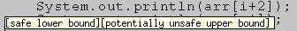

This page describes how attributes are visualized in the Soot Eclipse Plugin. These visual representations work in both the IR Editor and the regular Java source editor.
When the Soot-Eclipse plugin encounters a String Tag or a Link Tag it generates a hoverHelp tooltip that becomes visible upon mousing over the corresponding line number.
When the Soot-Eclipse plugin encounters any textual attributes it places a SootAttribute marker int the vertical ruler of the editor at the corresponding line number. This is to indicate there is some information avaliable at that line.
When the Soot-Eclipse plugin encounters a Color Tag along with a Position Tag it colors the region specified in the Position Tag with the color specified in the Color Tag.

When the Soot-Eclipse plugin encounters a Link Tag, not only does it display the string (label) as a tooltip but it creates a link that can be accessed by clicking on the marker at the corresponding line in the vertical ruler to the left of the editor. A popup list will popup with a list of links. Clicking on one of the links will move the focus to the link target.